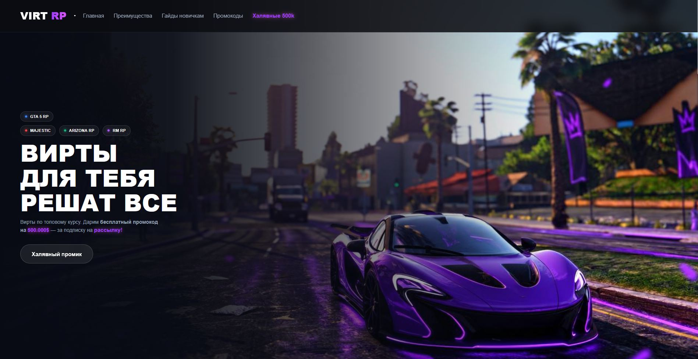
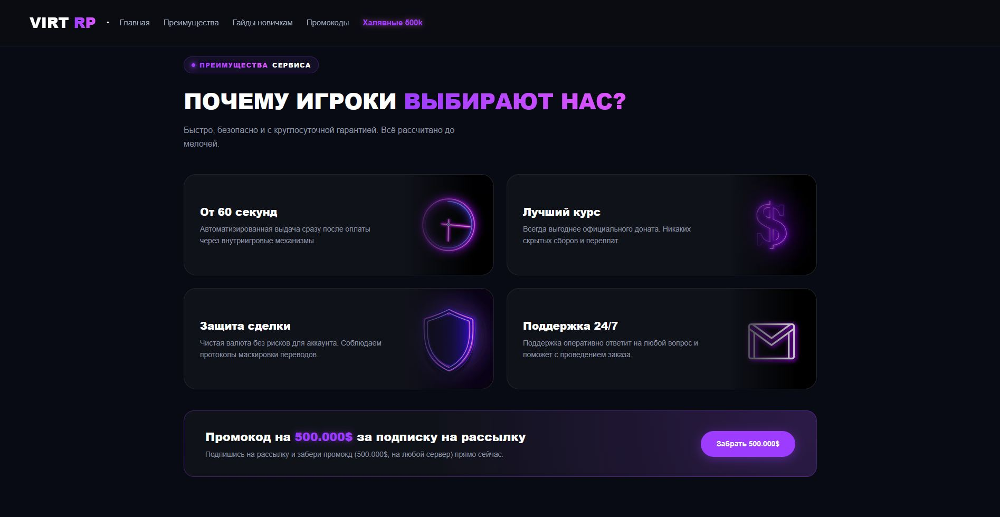
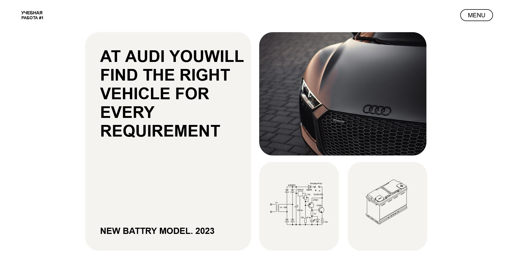
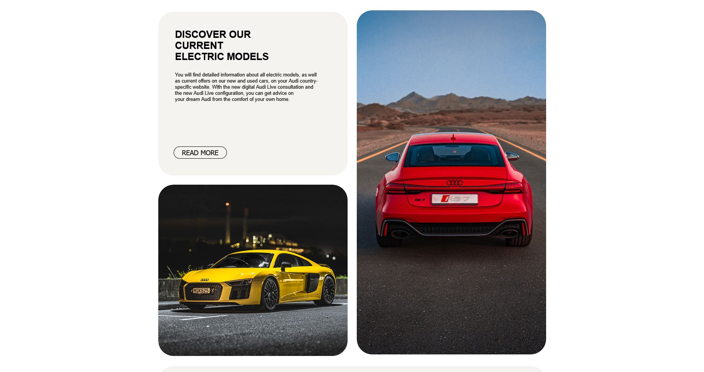

Мои работы
Подборка проектов (на данный момент их 2),
которые я создал, идеально изучив HTML, CSS, за короткий промежуток времени
VIRT RP
Наш проект полностью создавался вручную, что позволило уделить особое внимание проработке каждого независимого элемента интерфейса. Мы стремились объединить эстетическую гармонию и современные стандарты, чтобы подарить пользователям совершенно новый уровень визуального комфорта.


AUDI LANDING
Этот сайт создан мной, тут я научился работать с гридами.
Здесь собраны честные обзоры моделей, архив редких авто и полезные гайды по тюнингу.
Интуитивный интерфейс и удобный форум позволяют быстро найти нужную схему или совет.

